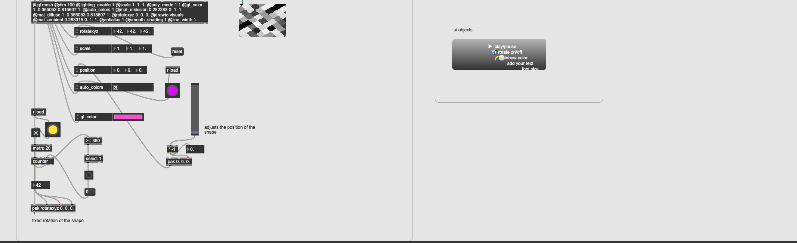

prismatica

Introduction
This was a project for IAT 443: Interactive Video, made in Spring 2024. This is a generative and interactive video project. I chose to do this project individually, so that I could have creative freedom. The program used is Max MSP.
At the heart of prismatica lies a fascination with the vibrant interplay of lines, 3D shapes, and colors orchestrated in music visualizers, particularly within the electrifying realm of EDM productions. My firsthand experiences with these productions have not only shown me the transformative power of visuals in enhancing musical experiences but also ignited a passion for exploring this creative frontier myself.
Inspiration
Inspired by the endless possibilities of visual music interpretation—from abstract 2D graphics to immersive 3D worlds—I embarked on a journey to meld these elements into an interactive art piece. prismatica is my exploration into how dynamic visuals can not only accompany but also amplify the energy and emotion of music.
Central to the experience is an interface inspired by midi controllers used by VJs, offering users an intuitive means to interact with the visualizer.
Process
In the initial phase, my experimentation with kaleidoscopic visuals and basic 3D shapes felt lacking in depth and aesthetic appeal. Seeking a more captivating approach, I delved into the world of “jit.gl.mesh” and “jit.matrix” within Max MSP, guided by this tutorial. This exploration led to the creation of dynamic lines that morph into mesmerizing 3D shapes, each uniquely responsive to the music’s amplitude, bass, and overall vibe.
I tested any and all of the attributes I could until I was satisfied with the appearance. And then I decided which properties to animate:
- The shape rotates on all 3 axes at the same rate
- The scale of the shape changes depending on the music amplitude
- The position of the camera changes on the Z axis based on a random trigger that ramps up/down
- The background flashes slightly triggered by the bass
- When the bass is triggered a new pattern of noise is generated into a jit.matrix which changes the pattern of the mesh
- The rotating matrix causes the lines to constantly change
Through simple buttons and sliders, users can alter the visual and auditory experience—changing shapes, adjusting the music, or even personalizing the visualizer with their text, making each experience uniquely their own.
Here’s what the UI does:
- green button: play/pauses jit.world
- yellow button: toggles the rotation of the shape
- purple button: toggles automatic color (makes it rainbow)
- pink squares: changes the music
- no music
- All Day All Night by Hyperbeam, OMNOM, and Odd Mob
- Left To Right by Odd Mob
- Losing Control by OMNOM and Odd Mob
- Fine Day Anthem by Boys Noize, Opus III, and Skrillex
- light blue squares: changes the shape
- sphere
- torus
- cylinder
- cube
- plane
- purple slider: zooms out
- text input: allows the user to change the text
- grey slider: adjusts the font size
The songs chosen are around the same bpm are of the same genre, and match the vibe of the visualizer. EDM visuals often have the DJ’s name overlayed on top of the graphics, so I included a text input to allow users to add their name or any text they’d like. The font size is adjustable because the window size is changeable.
Challenges
The biggest challenge was figuring out what to make and how to make it. As mentioned earlier, the first iteration was not aesthetic enough. Looking at YouTube tutorials on Max MSP helped me figure out what I could do to make a better-looking visualizer. The issues I encountered while making the patcher were mostly fixed by trial and error testing with the attributes. For example, I couldn’t change the text position without it moving with the camera movements until I checked transform_reset.
Reflection
As I reflect on prismatica, I see it not just as a project but as a milestone in my ongoing exploration of the intersection between art and technology. It represents a step towards my aspiration to contribute meaningfully to the world of music production visuals, blending emotion, energy, and engagement through interactive art. Looking ahead, I’m excited to dive deeper into this intersection, driven by the belief that the fusion of music and visual art holds boundless potential for immersive experiences. prismatica is just the beginning.
References
- Andrew Robinson. (2022, November 15). jit.gl.gridshape & jit.gl.mesh – Helpful Objects to Know – Max MSP Tutorial [Video]. YouTube. https://youtu.be/uzQOiwMkESU?si=VmHU_4E5doh3iQAQ
- Resgen. (n.d.). Resgen (Generative Set). Retrieved from https://docoptic.com/downloads/g01/
- Native Instruments. (n.d.). Image of Traktor Kontrol F1 DJ Controller. Retrieved from https://m.media-amazon.com/images/I/61PlpLz5zTL._AC_SL1200_.jpg
- Hyperbeam, OMNOM, & Odd Mob. (2023). All Day All Night. [Song]. Retrieved from https://open.spotify.com/track/4PSq1vPPpzEpVfwLCadN9j?si=c1897fee14f74022
- Odd Mob. (2022). LEFT TO RIGHT. [Song]. Retrieved from https://open.spotify.com/track/34S5HQW5JoLBO9VS9YSSQc?si=34337342a0e141e5
- OMNOM, & Odd Mob. (2023). Losing Control. [Song]. Retrieved from https://open.spotify.com/track/4LwxeWSBu0LQtEyGLb6FVP?si=66737a5241da47c6
- Boys Noize, Opus III & Skrillex . (2023). Losing Control. [Song]. Retrieved from https://open.spotify.com/track/6tifCCTIVBLC2TmTquYG7G?si=8509b4646d7e4d3e